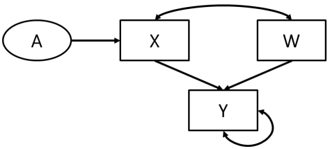

The three “languages” of causal inference#
Executive summary
In causal studies, you are aiming to find an unbiased estimate of the effect of a exposure or treatment on an outcome, by carefully controlling for confounders of the relationship between those two variables.
Potential outcomes/counterfactuals framework for causal inference states that we draw causal inference thought contrasting actual values and counterfactual values (if they had or had not received treatment/exposure). It is focused on all possible outcomes, and has specific notation you can use.
Causal diagrams (directed acyclic graphs - DAGs) are based on expert knowledge. They depict the causal relationships between nodes using directed arrows. They are used to illustrate/identify sources of bias, to indicate where associations/independence should be expected, and to help inform study design.
Structural Equation Modelling (SEM) is a statistical technique to model hypothesised relationships among variables, and these can be causal models if certain criteria are met. SEM involves visualising the hypothesised model, translating the DAG to a path statement, assessing fit statistics, improving model fit using modification indices, and so on.
Causal inference#
Causal inference research aims to uncover causal effects. It involves finding an unbiased estimate of the effect of X on Y, by controlling for confounding factors that could bias the estimate. This is an estimate of the causal effect of an exposure on an outcome.[Lederer et al. 2018]
When it comes to talking about and defining causality, pioneers in causal inference have come up with three languages.
Language |
Pioneers |
Strengths |
Limitations |
|---|---|---|---|
Using potential outcomes / counterfactuals |
1923 Neyman (statistics); 1973 Lewis (philosophy); 1974 Rubin (statistics); 1986 Robins (epidemiology); [Zhao 2022] |
Good for articulating the inference for a small number of causes and effects [source] |
Not as convenient if the system is complex [Zhao 2022] |
Using graphs |
1921 Wright (genetics); 1988 Pearl (computer science “AI”); 1993 Spirtes, Glymour, Scheines (philosophy). [Zhao 2022] |
Good for understanding the scientific problems [source] |
Difficult for statistical inference because model is non-parametric [Zhao 2022] (i.e. doesn’t make explicit assumptions about functional form of underlying population distribution… inference more challenging as no predefined functional forms) |
Using structural equations |
1921 Wright (genetics); 1943 Haavelmo (econometrics); 1975 Duncan (social sciences); 2000 Pearl (computer science). [Zhao 2022] |
Good for fitting simultaneous models for the variables (espeically for abstract concepts)[source] |
Danger to be confused with regression [Zhao 2022] |
Potential outcomes/counterfactuals#
Names for this approach:
Potential outcomes framework
Counterfactual approach
Equivalent concepts approach,[source]
Rubin or Neyman-Rubin causal model. [Igelström et al. 2022]
The basic idea of this approach
Using this framework, you describe your causal problem using counterfactuals. A counterfactual is a comparison between what is and what might have been - for example, “I know ingesting the poison killed John, because if John had not ingested the poison, I know he would have lived”. ‘The counterfactual outcomes of a specific individual can never be known, since we can never observe the same individual both exposed and unexposed under the same circumstances’. [Igelström et al. 2022] Instead, we estimate an average causal effect, looking at counterfactual outcomes between groups (rather than individuals).
The logic of counterfactuals if that you can draw causal inferences when the distribution of observed outcomes in treated group equals in expectation the distribution if they had not ben treated - and because no-one can both receive and not receive treatment, ‘causal inferences implicitly contrast actual values with counterfactual values’. In other words: ‘when exchangeability between those receiving and not receiving an intervention is obtained, the causal counterfactual can be estimated. When exchangeability (i.e., no confounding) is achieved, the contrast of actual outcomes among people who received the intervention in comparison with those who did not receive the intervention can provide the causal effect of the intervention’ [Glymour and Spiegelman 2017]
Exposure and outcomes
We need to identify an exposure and an outcome (and this is true for all causal inference research). An exposure is a ‘treatment, intervention or other variable that could have taken one of several counterfactual values’. [Igelström et al. 2022] We are often focussed on interventions (i.e. variables that can be manipulated), as they fit well in the potential outcomes framework. Although other variables like age, race and gender can have causal effects, they do not fit as cleanly in the potential outcomes framework.[source] Rubin states that “if you are not talking about an intervention, you can’t talk about causality” - i.e. we’re defining causality using counterfactuals, which is about the counterfactual effects of the intervention[source]
‘Potential outcomes refer to all possible outcomes that an individual could experience—both those which are observed (factual) and those which are not (counterfactual). Given a binary exposure and a binary outcome, the possible combinations of actual and counterfactual outcomes give rise to four causal types’:
‘Doomed: would have experienced the outcome regardless of exposure.
Causative: would have experienced the outcome if exposed, otherwise not.
Preventative: would have experienced the outcome if unexposed, otherwise not.
Immune: would not have experienced the outcome regardless of exposure status.’ [Igelström et al. 2022]
Mathematical notation
This framework ‘uses mathematical notation to describe counterfactual outcomes and can be used to describe the causal effect of an exposure on an outcome in statistical terms’. [Igelström et al. 2022] There are various notations used, but some examples are:
Potential outcome if exposed (Ya=1) or not exposed (Ya=0)
Expected value of continuous outcome (E(Y)) or probability of binary outcome(P(Y=1))
Conditional expectation - expected value of Y given that another variable C is 1 (E(Y|C=1)) - i.e. expected values conditional on C / within levels of C / holding C constant. [Igelström et al. 2022]
Graphs#
Using this approach, you describe your causal problem using a causal diagram called a directed acyclic graphs (DAGs). DAGs are composed of nodes and arrows which depict the causal relationships between different variables. They are:
Directed - as arrows have a single direction (unidirectional) that represents known causal effects (based on prior knowledge)
Acyclic - as nodes cannot have a directed path from itself back to itself [HarvardX PH559x]
Example:
We don’t draw causal diagrams as an exact, accurate representation of the world - instead, we draw causal DAGs to help us think about possible sources of bias when making causal inferences.
They make sure we illustrate and identify our sources of biases (assumptions)
More precise and efficient than writing pages of assumptions[HarvardX PH559x]
Although they are based on assumptions, so are analytic models.[source]
Although investigators often feel some discomfort in deciding what causal effects do and do not exist on the basis of prior knowledge, the advantage of this approach is that it makes these assumptions explicit (and hence transparent).[Lederer et al. 2018]
They indicate when associations or independence should be expected.[HarvardX PH559x]
They can help determine whether the effect of interest can be identified from available data, and help us clarify our study question[source] - and to identify problems in the study design[HarvardX PH559x]
To find out more about DAGs, see the subsequent page on DAGs.
Structural equation modelling (SEM)#
‘Structural Equation Modelling (SEM) is a statistical technique to model hypothesised relationships among variables.’ We first specify these relationships, based on subject matter expertise, either:
Graphically
By listing a set of functions - hence “structural”
The relationships can then be ‘described using structural equations, so called because they describe causal relationships rather than observed associations. A set of structural equations can sometimes be rewritten as a single reduced form equation.’ [Igelström et al. 2022]
Variables can be:
Manifest (observed) or latent (unobserved)
Exogenous (have no cause themselves, but affect others) or endogenous (values are caused by other variables)
Relationships between variables can be one of:
Correlational / bidrectional
Isolated / conditionally independent
Causal / unidirectional
In a graphical model, representations include:
Ovals = latent variables
Rectangles = manifest variables
Single or double headed arrows indicate nature of relationship [Madhanagopal and Amrhein 2019]

Structural Causal Models
Structural Causal Models (SCM) were proposed by Judea Pearl. They integrate SEM and graphical models to aid understanding of causal relationships. SEMs are mainly ‘used to confirm a model rather than to explore a phenomenon’. SEMs can be interpreted as causal models if they meet the conditions:
Structure is valid representation of reality
Relationships are directed and acyclic
Directed acyclic gropus are a subset of graphical models, where relationships must be directional
Variables, conditioned on their parents, are independent of their ancestores
See example below - soccer is ancestor of heatstroke - this conditoin is met if soccer only causes heatstroke via dehydration - and is not met if soccer effects heat stroke directly or through another mediating variable (I think, if not included)
There are no “back doors” from cause to effect [Madhanagopal and Amrhein 2019]
Covariance matrix
‘The fundamental unit of information in an SEM is the covariance matrix of the model variables.’
‘An ‘Under-Identified’ model is a model in which it is not possible to estimate all the model parameters because there are too few unique elements. A ‘Just-Identified’ model is a model in which the number of unique covariance elements equals the number of parameters being estimated. An ‘Over-Identified’ model is a model in which the number of unique covariance parameters is greater than the number of parameters being estimated. The difference is the degrees of freedom available for hypothesis tests. The total number of estimated parameters in the model should always be lower than fundamental unit of information in the data; i.e. the model should be over-identified.’ [Madhanagopal and Amrhein 2019]
Path statement
Each of the single headed arrows in the diagram ‘represents a hypothesised dependency. For each of these paths,’ we ‘estimate a path coefficient and test whether the coefficient statistically differs from zero’. [Madhanagopal and Amrhein 2019]
Fit statistics
We assess goodness of fit, and can explore model modifications to improve fit, by:
‘Increasing the number of paths (i.e. allowing the corresponding coefficients to be estimated)
Reducing the number of paths (i.e. constraining the corresponding coefficients to zero)’ [Madhanagopal and Amrhein 2019]